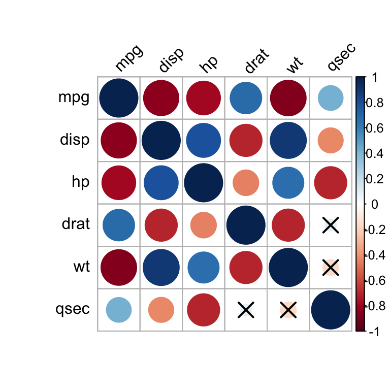
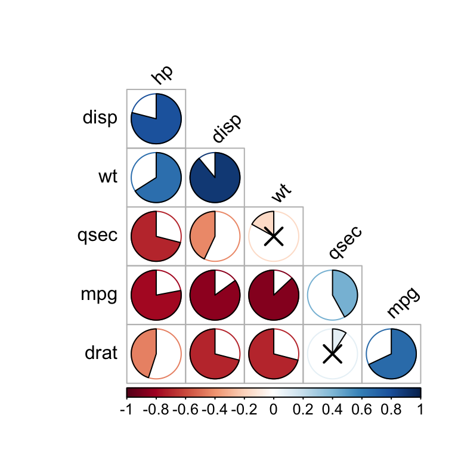
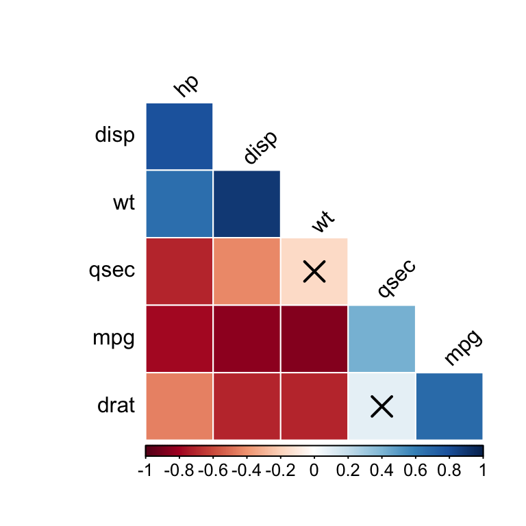
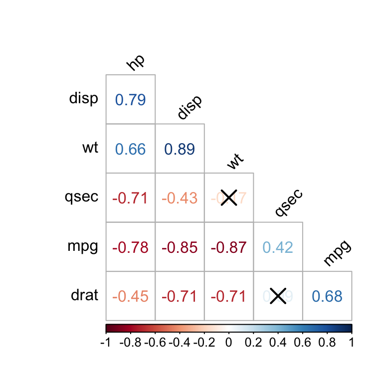
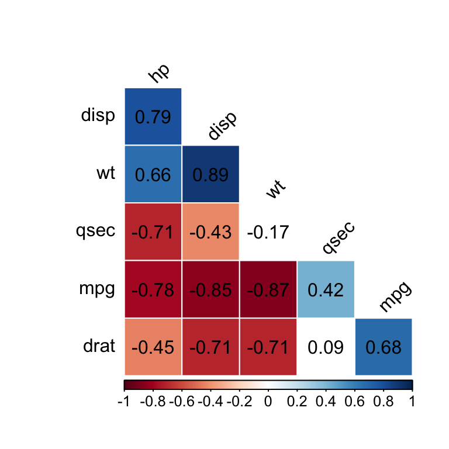
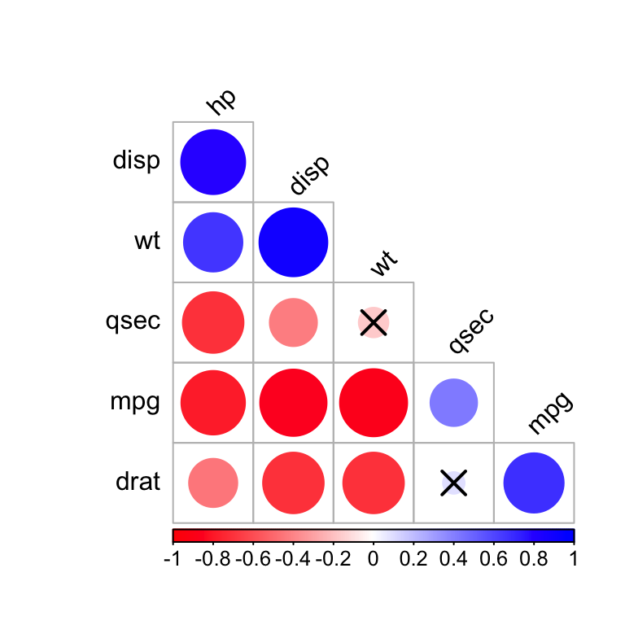
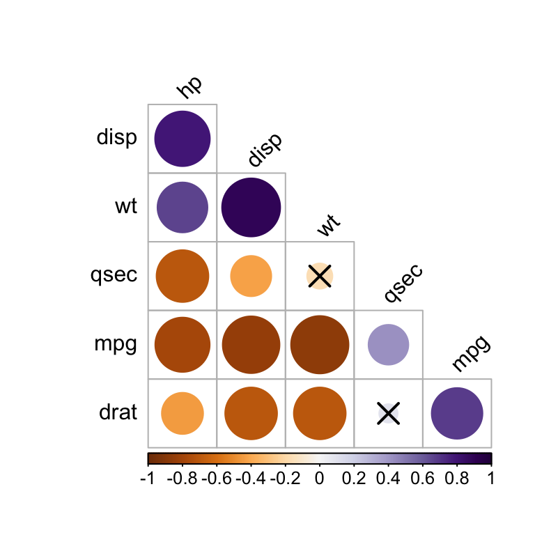

Correlation Analysis
Alboukadel Kassambara
2019-04-15
correlation-analysis.RmdData
mydata <- mtcars %>%
select(mpg, disp, hp, drat, wt, qsec)
head(mydata, 3)
#> mpg disp hp drat wt qsec
#> Mazda RX4 21.0 160 110 3.90 2.620 16.46
#> Mazda RX4 Wag 21.0 160 110 3.90 2.875 17.02
#> Datsun 710 22.8 108 93 3.85 2.320 18.61Correlation matrix
The function cor_mat() computes correlation matrix between all numeric variables in the data.
Correlation coefficients
# Correlation matrix between all variables
cor.mat <- mydata %>% cor_mat()
cor.mat
#> # A tibble: 6 x 7
#> rowname mpg disp hp drat wt qsec
#> * <chr> <dbl> <dbl> <dbl> <dbl> <dbl> <dbl>
#> 1 mpg 1 -0.85 -0.78 0.68 -0.87 0.42
#> 2 disp -0.85 1 0.79 -0.71 0.89 -0.43
#> 3 hp -0.78 0.79 1 -0.45 0.66 -0.71
#> 4 drat 0.68 -0.71 -0.45 1 -0.71 0.091
#> 5 wt -0.87 0.89 0.66 -0.71 1 -0.17
#> 6 qsec 0.42 -0.43 -0.71 0.091 -0.17 1
# Specify some variables of interest
mydata %>% cor_mat(mpg, hp, wt)
#> # A tibble: 3 x 4
#> rowname mpg hp wt
#> * <chr> <dbl> <dbl> <dbl>
#> 1 mpg 1 -0.78 -0.87
#> 2 hp -0.78 1 0.66
#> 3 wt -0.87 0.66 1
# Or remove some variables in the data
# before the analysis
mydata %>% cor_mat(-mpg, -hp)
#> # A tibble: 4 x 5
#> rowname disp drat wt qsec
#> * <chr> <dbl> <dbl> <dbl> <dbl>
#> 1 disp 1 -0.71 0.89 -0.43
#> 2 drat -0.71 1 -0.71 0.091
#> 3 wt 0.89 -0.71 1 -0.17
#> 4 qsec -0.43 0.091 -0.17 1Significance levels
cor.mat %>%
cor_get_pval()
#> # A tibble: 6 x 7
#> rowname mpg disp hp drat wt qsec
#> * <chr> <dbl> <dbl> <dbl> <dbl> <dbl> <dbl>
#> 1 mpg 0. 9.40e-10 0.00000018 0.000018 1.30e- 10 0.017
#> 2 disp 9.40e-10 0. 0.000000071 0.0000053 1.20e- 11 0.013
#> 3 hp 1.80e- 7 7.10e- 8 0 0.01 4.10e- 5 0.0000058
#> 4 drat 1.80e- 5 5.30e- 6 0.01 0 4.80e- 6 0.62
#> 5 wt 1.30e-10 1.20e-11 0.000041 0.0000048 2.30e-236 0.34
#> 6 qsec 1.70e- 2 1.30e- 2 0.0000058 0.62 3.40e- 1 0Reshape correlation matrix as paired list
# Collapse the correlation matrix into long format
# ::::::::::::::::::::::::::::::::::::::::::::::::
long.format <- cor.mat %>% cor_gather()
long.format
#> # A tibble: 36 x 4
#> var1 var2 cor p
#> <chr> <chr> <dbl> <dbl>
#> 1 mpg mpg 1 0.
#> 2 disp mpg -0.85 9.40e-10
#> 3 hp mpg -0.78 1.80e- 7
#> 4 drat mpg 0.68 1.80e- 5
#> 5 wt mpg -0.87 1.30e-10
#> 6 qsec mpg 0.42 1.70e- 2
#> 7 mpg disp -0.85 9.40e-10
#> 8 disp disp 1 0.
#> 9 hp disp 0.79 7.10e- 8
#> 10 drat disp -0.71 5.30e- 6
#> # … with 26 more rows
# Spread a correlation data format
# ::::::::::::::::::::::::::::::::::::::::::::::::
# Spread the correlation coefficient value
long.format %>% cor_spread(value = "cor")
#> # A tibble: 6 x 7
#> rowname mpg disp hp drat wt qsec
#> <chr> <dbl> <dbl> <dbl> <dbl> <dbl> <dbl>
#> 1 mpg 1 -0.85 -0.78 0.68 -0.87 0.42
#> 2 disp -0.85 1 0.79 -0.71 0.89 -0.43
#> 3 hp -0.78 0.79 1 -0.45 0.66 -0.71
#> 4 drat 0.68 -0.71 -0.45 1 -0.71 0.091
#> 5 wt -0.87 0.89 0.66 -0.71 1 -0.17
#> 6 qsec 0.42 -0.43 -0.71 0.091 -0.17 1
# Spread the p-value
long.format %>% cor_spread(value = "p")
#> # A tibble: 6 x 7
#> rowname mpg disp hp drat wt qsec
#> <chr> <dbl> <dbl> <dbl> <dbl> <dbl> <dbl>
#> 1 mpg 0. 9.40e-10 0.00000018 0.000018 1.30e- 10 0.017
#> 2 disp 9.40e-10 0. 0.000000071 0.0000053 1.20e- 11 0.013
#> 3 hp 1.80e- 7 7.10e- 8 0 0.01 4.10e- 5 0.0000058
#> 4 drat 1.80e- 5 5.30e- 6 0.01 0 4.80e- 6 0.62
#> 5 wt 1.30e-10 1.20e-11 0.000041 0.0000048 2.30e-236 0.34
#> 6 qsec 1.70e- 2 1.30e- 2 0.0000058 0.62 3.40e- 1 0Notice that, this includes duplicates (for example: disp/mpg & mpg/disp) and diagonal values (mpg/mpg, disp/disp). It’s possible to pull either the lower or the upper triangular part of the correlation matrix: no diagonal values should occur, and each unique combination should appear only once.
cor.mat %>%
pull_lower_triangle() %>%
cor_gather()
#> var1 var2 cor p
#> 2 disp mpg -0.850 9.4e-10
#> 3 hp mpg -0.780 1.8e-07
#> 4 drat mpg 0.680 1.8e-05
#> 5 wt mpg -0.870 1.3e-10
#> 6 qsec mpg 0.420 1.7e-02
#> 9 hp disp 0.790 7.1e-08
#> 10 drat disp -0.710 5.3e-06
#> 11 wt disp 0.890 1.2e-11
#> 12 qsec disp -0.430 1.3e-02
#> 16 drat hp -0.450 1.0e-02
#> 17 wt hp 0.660 4.1e-05
#> 18 qsec hp -0.710 5.8e-06
#> 23 wt drat -0.710 4.8e-06
#> 24 qsec drat 0.091 6.2e-01
#> 30 qsec wt -0.170 3.4e-01Pull upper and lower triangular parts
- Triangular parts of the correlation matrix:
# Pull lower triangular part
cor.mat %>% pull_lower_triangle()
#> rowname mpg disp hp drat wt qsec
#> 1 mpg
#> 2 disp -0.85
#> 3 hp -0.78 0.79
#> 4 drat 0.68 -0.71 -0.45
#> 5 wt -0.87 0.89 0.66 -0.71
#> 6 qsec 0.42 -0.43 -0.71 0.091 -0.17
# Pull upper triangular part
cor.mat %>% pull_upper_triangle()
#> rowname mpg disp hp drat wt qsec
#> 1 mpg -0.85 -0.78 0.68 -0.87 0.42
#> 2 disp 0.79 -0.71 0.89 -0.43
#> 3 hp -0.45 0.66 -0.71
#> 4 drat -0.71 0.091
#> 5 wt -0.17
#> 6 qsec- Triangular parts of the p-value matrix:
# Pull lower triangular part
# Do this
pval <- cor.mat %>%
cor_get_pval() %>%
pull_lower_triangle()
# OR this
pval <- cor.mat %>%
pull_lower_triangle() %>%
cor_get_pval()
pval
#> rowname mpg disp hp drat wt qsec
#> 1 mpg
#> 2 disp 9.4e-10
#> 3 hp 1.8e-07 7.1e-08
#> 4 drat 1.8e-05 5.3e-06 0.01
#> 5 wt 1.3e-10 1.2e-11 4.1e-05 4.8e-06
#> 6 qsec 0.017 0.013 5.8e-06 0.62 0.34Visualize a correlation matrix
Replacing correlation coefficients by symbols
cor.mat %>%
cor_as_symbols() %>%
pull_lower_triangle()
#> rowname mpg disp hp drat wt qsec
#> 1 mpg
#> 2 disp *
#> 3 hp * *
#> 4 drat + + .
#> 5 wt * * + +
#> 6 qsec . . +using R base plot
We’ll use the R function cor_plot() [rstatix], which provides a tibble-friendly framework to visualize a correlation matrix. It is a wrapper around the R base function corrplot() [corrplot package]. Compared to corrplot(), it can handle directly the output of the functions cor_mat() [rstatix], rcorr() [Hmisc], correlate() [corrr] and cor() [stats].
The p-values contained in the outputs of the functions cor_mat() and rcorr() are automatically detected and used in the visualization.
# Basic correlogram
#::::::::::::::::::::::::::::::::::::::::::
# Full correlation matrix,
# insignificant correlations are marked by crosses
cor.mat %>% cor_plot()
# Reorder by correlation coefficient
# pull lower triangle and visualize
cor.lower.tri <- cor.mat %>%
cor_reorder() %>%
pull_lower_triangle()
cor.lower.tri %>% cor_plot()
# Change visualization methods
#::::::::::::::::::::::::::::::::::::::::::
cor.lower.tri %>%
cor_plot(method = "pie")
cor.lower.tri %>%
cor_plot(method = "color")
cor.lower.tri %>%
cor_plot(method = "number")
# Show the correlation coefficient: label = TRUE
# Blank the insignificant correlation
#::::::::::::::::::::::::::::::::::::::::::
cor.lower.tri %>%
cor_plot(
method = "color",
label = TRUE,
insignificant = "blank"
)
# Change the color palettes
#::::::::::::::::::::::::::::::::::::::::::
# Require ggpubr: install.packages("ggpubr")
library("ggpubr")
# Using custom color palette
my.palette <- get_palette(c("red", "white", "blue"), 200)
cor.lower.tri %>%
cor_plot(palette = my.palette)
# Using RcolorBrewer color palette
my.palette <- get_palette("PuOr", 200)
cor.lower.tri %>%
cor_plot(palette = my.palette)
Combining matrix of correlation coefficients and significance levels
mtcars %>%
select(mpg, disp, hp, drat, wt, qsec) %>%
cor_mat() %>%
cor_mark_significant()
#> rowname mpg disp hp drat wt qsec
#> 1 mpg
#> 2 disp -0.85****
#> 3 hp -0.78**** 0.79****
#> 4 drat 0.68**** -0.71**** -0.45**
#> 5 wt -0.87**** 0.89**** 0.66**** -0.71****
#> 6 qsec 0.42* -0.43* -0.71**** 0.091 -0.17